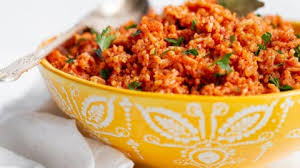

I love the following, in order of priority
I dislike the following
The name of my best is jollof rice
To view more images of jollof rice, click here
Example of a good food time-table
| DAY/TIME | MORNING | AFTERNOON | NIGHT |
|---|---|---|---|
| Monday | Bread and Tea | Semo and Vegetable | Fruit salad |
| Tuesday | Yam and fish stew | Amala and Ewedu | potato porridge |
| Wednesday | Beans and Plantain | Eba and Okro soup | Boiled plantain and Egg |